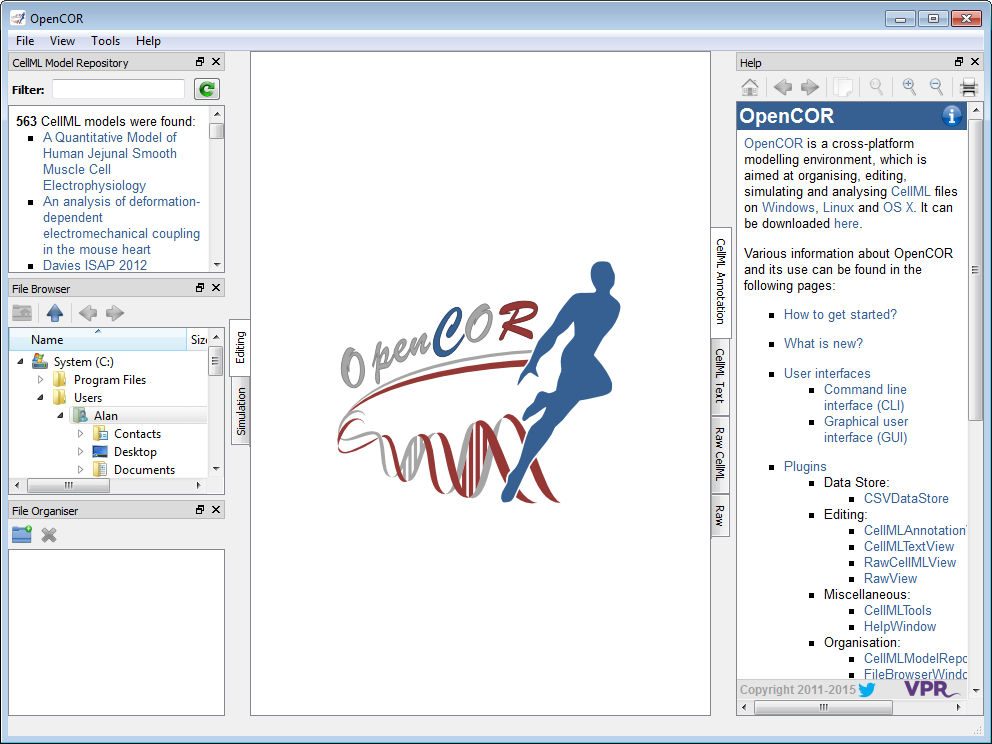
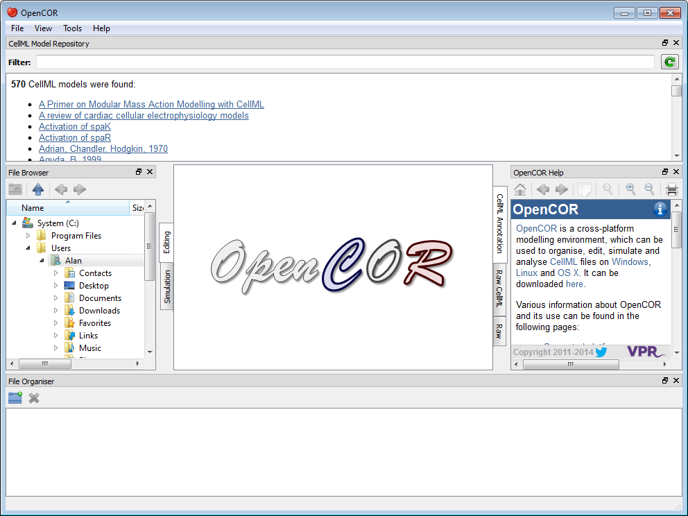
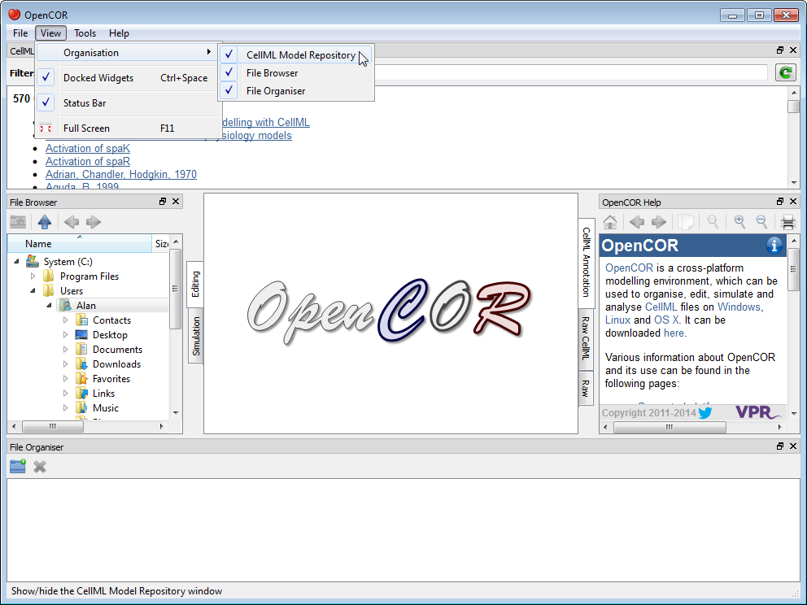
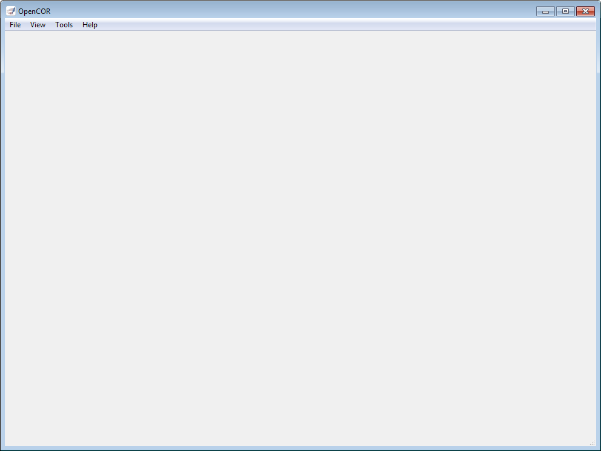

OpenCOR offers a consistent GUI across the different platforms it supports. The look and feel of the interface is determined by the plugins that are selected. The first time you run OpenCOR, it will look something like:

The central area is used to interact with files. By default, no files are open, hence the OpenCOR logo is shown instead. To the sides, there are dockable windows, which provide additional features. Those windows can be dragged and dropped to the top or bottom of the central area:

Alternatively, they can be undocked:
Or even closed, by either closing the window itself or by unticking the corresponding menu item (under the View menu, or the Help menu for the Help window). Alternatively, all the docked windows can be closed at once:

To unselect all the plugins will result in OpenCOR looking 'empty':
